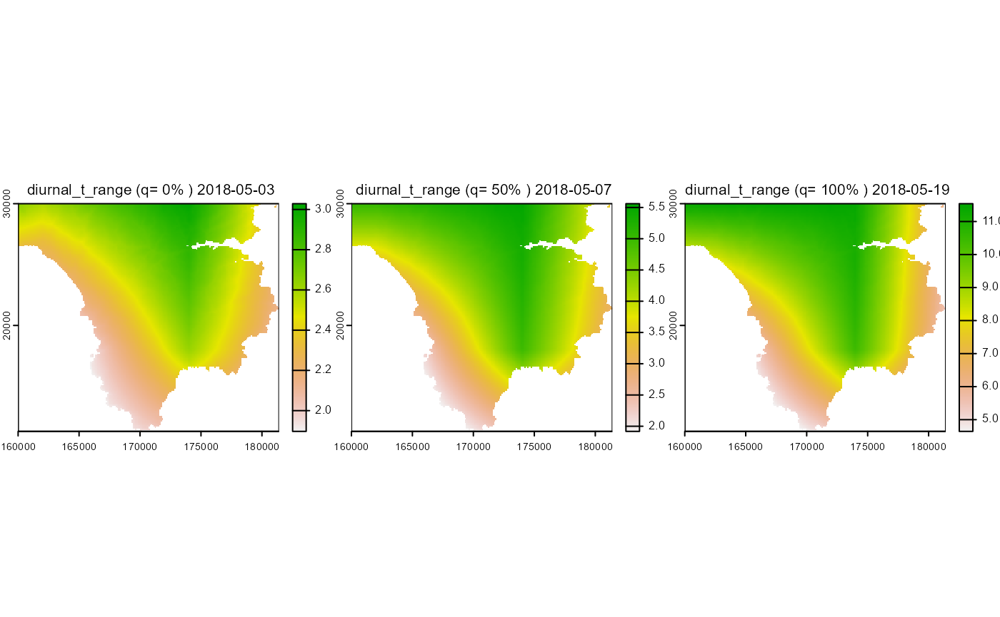

3. Spatial Downscaling of UKCP18 regional climate data
Defining the area of interest
The projection, resolution and extent of the downscaled area is defined by providing a fine-resolution DTM that also acts as a land/sea mask with sea cells having a NA value.
# Get fine and medium res DTMs from package
dir_dtm<-system.file('extdata/dtms',package='mesoclim')
dtmm<-rast(file.path(dir_dtm,'dtmm.tif'))
dtmf<-rast(file.path(dir_dtm,'dtmf.tif'))
# Show local downscale area within wider dtmm
aoi<-vect(ext(dtmf))
plot.new()
plot(dtmm,main='Downscale area within wider dtmm')
plot(aoi,add=TRUE)Preparing the data
Coarse resolution climate and ancillary data will need to be prepared
as outlined in
vignette('mesoclim_2_preparedata', package='mesoclim').
Sea surface temperature data must also be prepared for the surrounding area and for the same time period as the input climate data.
# Load prepared climate data
ukcp18rcm<-read_climdata(file.path(system.file('extdata/preprepdata',package='mesoclim'),'ukcp18rcm.Rds'))
# Get time period
startdate<-ukcp18rcm$tme[1]
enddate<-ukcp18rcm$tme[length(ukcp18rcm$tme)]
# set model run as same as that in climate data
member<-'01'
# Load sea surface data
dir_sst<-system.file('extdata/ukcp18sst',package='mesoclim')
sst<-create_ukcpsst_data(dir_sst,startdate,enddate,ukcp18rcm$dtm,member)Single step downscaling
Wrapper function allows downscaling in a single function call, with parameters defining which processes are captured by the downscaling.
Improvements
Include dtmf in
spatialdownscaleoutput.Allow
spatialdownscaleoutput as spatrasters, packedspatrasters or arrays.Include wind and temp height in
spatialdownscaleoutputWrite climdata to file function that converts to packed rast or arrays?
Read climdata file function?
# Downscale one year of future climate data
t0<-now()
mesoclimate<-spatialdownscale(ukcp18rcm, sst, dtmf, dtmm, basins = NA, cad = TRUE,
coastal = TRUE, thgto =2, whgto=2,
rhmin = 20, pksealevel = TRUE, patchsim = TRUE,
terrainshade = FALSE,
precipmethod = "Elev", fast = TRUE, noraincut = 0.01)
#> Downscaling wind...
#> Downscaling temperature...
#> Downscaling relative humidity
#> Downscaling pressure...
#> Downscaling SW radiation...
#> Downscaling LW radiation with terrain shading...
#> Downscaling precipitation...
#> Formatting output...
print(now()-t0)
#> Time difference of 1.203168 mins
# write_climdata(mesoclimate,file.path(system.file('extdata/dscaledata',package='mesoclim'),'mesoclimate.rds'))
# mesoclimate<-read_climdata(file.path(system.file('extdata/dscaledata',package='mesoclim'),'mesoclimate.rds')))Display outputs
In tabular form for all times and locations:
climvars<-c('tmin','tmax','relhum','pres','swrad','lwrad','windspeed','winddir','prec')
smry_fun<-function(x) summary(as.vector(as.array(x)))
rslt<-sapply(mesoclimate[climvars],smry_fun)
stats_df<-as.data.frame(t(round(rslt,3)))[,c('Min.','Mean','Max.')]
print(stats_df)
#> Min. Mean Max.
#> tmin 3.228 9.822 14.583
#> tmax 9.540 14.456 21.700
#> relhum 62.246 81.589 99.851
#> pres 94.888 100.654 103.322
#> swrad 105.524 217.810 348.668
#> lwrad 245.207 308.898 342.693
#> windspeed 0.043 2.786 12.406
#> winddir 0.003 183.142 359.998
#> prec 0.000 2.362 20.107Or as selected rasters for days corresponding to spatial quantiles (eg days where spatial means are ata min, median and max values):
for(var in climvars){
print(var)
r<-mesoclimate[[var]]
names(r)<-rep(var,nlyr(r))
plot_q_layers(r,vtext=var)
}
#> [1] "tmin"#> [1] "tmax"#> [1] "relhum"#> [1] "pres"#> [1] "swrad"#> [1] "lwrad"#> [1] "windspeed"#> [1] "winddir"#> [1] "prec"
# Show spatial range in daily temperatures
plot(max(mesoclimate$tmax)-min(mesoclimate$tmin),main='Max diurnal temperature range', font.main = 1, nc=1)
par(mar=c(1,1,1,1),cex.main=0.8, mgp=c(3,0.1,0))
layout(matrix(c(1,2,3,4,1,5,6,7,1,8,9,10),ncol=3),heights=c(1,3,3,3))
#par(mfrow=c(3,3))
plot.new()
text(0.5,0.5,"Spatial mean (green), max (red) and min (blue) by day of year",cex=1,font=1)
for(v in climvars){
r<-mesoclimate[[v]]
plot_timestats_r(r,v,idx='doy',lgd=FALSE)
}Multiple step downscaling
Spatial downscaling can be decomposed to the effects of specific physical processes, such as the effect of elevation, coastal or cold air drainage on temperature. Specific functions for downscaling particular effects can be applied without needing to undertake full downscaling using all processes.
Note: for individual functions, outputs may need further processing to ensure names are times are carried through.
Improvements
Allow option of spatrast or array outputs? Or enforce a standard spatrast output?
Allow passing standard data input list of climdata as well as individual variables
Allow variable winddir in windspeed downscaling - or warning message if input wind dir varies?
Pressure
pres<-presdownscale(ukcp18rcm$pres, dtmf, ukcp18rcm$dtm, sealevel = TRUE)
names(pres)<-rep('pres',nlyr(pres))
terra::time(pres)<-ukcp18rcm$tme
plot_q_layers(pres)Cold air drainage
Requires the estimation of drainage basins defined by topography which can be carried out separately from the estimation of cold-air drainage in downscaling.
# Basins - dtmf should have sea marked as NA
basins<-basindelin(dtmf,boundary=2)
plot(basins,main='basins')For the chosen study area, cold air drainage has no effect on local temperatures during the chosen timeperiod (May):
Temperature elevation downscaling
Variable lapse rates derived from temperature, humidity and pressure are applied to correct for elevation effects when downscaling. For daily temperatures this can be carried out for min and max daily values.
tminelev<-.tempelev(ukcp18rcm$tmin,dtmf,ukcp18rcm$dtm,ukcp18rcm$relhum,ukcp18rcm$pres)
tmaxelev<-.tempelev(ukcp18rcm$tmax,dtmf,ukcp18rcm$dtm,ukcp18rcm$relhum,ukcp18rcm$pres)
names(tminelev)<-rep('tmin_elev',nlyr(tminelev))
terra::time(tminelev)<-ukcp18rcm$tme
names(tmaxelev)<-rep('tmax_elev',nlyr(tmaxelev))
terra::time(tmaxelev)<-ukcp18rcm$tme
plot_q_layers(tminelev)
plot_q_layers(tmaxelev)
# Check dirunal range of elev downscaling
diurnaltmp<-tmaxelev-tminelev
names(diurnaltmp)<-rep('diurnal_t_range',nlyr(diurnaltmp))
plot_q_layers(diurnaltmp)
Wind
Windspeed downscaling aims to capture the effect of both elevation and the sheltering effects of topography that are in turn dependent on wind direction and height above ground.
windspeed<-winddownscale(ukcp18rcm$windspeed, ukcp18rcm$winddir, dtmf, dtmm, ukcp18rcm$dtm, zi = ukcp18rcm$windheight_m, zo=2)
names(windspeed)<-rep('windspeed',nlyr(windspeed))
terra::time(windspeed)<-ukcp18rcm$tme
plot_q_layers(windspeed)Coastal effects
Uses sea surface temperatures, DTMs where sea is indicated by NA values and downscaled windspeed to estimate the effect of coastal effects. Coarse, medium and fine resolution DTMs are used to determine effects of upwind sea areas.
ADD: Guidance on selection of the extent of dtmm - how far should dtms extend from the downscaling area to adequately capture coastal effects??
# Interpolate - filling NAs and ensuring timesteps match climate inputs - MOVE THIS TO DATA PREP FUNCTION FOR SST??
if (any(global(sst,anyNA))) sstinterp<-.spatinterp(sst) else sstinterp<-sst
sstinterp<-.tmeinterp(sstinterp,NA,ukcp18rcm$tme)
# Resample to dtmf
if (crs(sstinterp) != crs(dtmf)) sstinterp<-project(sstinterp,crs(dtmf))
sstf<-.resample(sstinterp,dtmf)
# Calculate coastal temp effects - uses already downscaled windspeed
tmincoast<-.tempcoastal(tminelev,sstf,windspeed,ukcp18rcm$winddir,dtmf,dtmm,ukcp18rcm$dtm)
tmaxcoast<-.tempcoastal(tmaxelev,sstf,windspeed,ukcp18rcm$winddir,dtmf,dtmm,ukcp18rcm$dtm)
names(tmincoast)<-rep('tmin_coastef',nlyr(tmincoast))
terra::time(tmincoast)<-ukcp18rcm$tme
names(tmaxcoast)<-rep('tmax_coastef',nlyr(tmaxcoast))
terra::time(tmaxcoast)<-ukcp18rcm$tme
plot_q_layers(tmincoast)
plot_q_layers(tmaxcoast)All temperature effects downscaling
If only concerned with temperature downscaling, the wrapper function
tempdownscale allows all relevant processes to be run as a
single function.
tmin<-tempdownscale( ukcp18rcm,
sst,# can be coarse resolution
dtmf, # fine scale dem
dtmm , # medium re wider are dem
basins = basins, # basindelin() output or will calculate
u2 = windspeed, # windspeeds downscaled - or will calculate
cad = TRUE,
coastal = TRUE,
tempvar = 'tmin',
whgto = 2, # output wind height above ground
thgto = 2 # output temperature height above ground
)
tmax<-tempdownscale(ukcp18rcm,
sst,# can be coarse
dtmf, # fine scale dem
dtmm , # medium re wider are dem
basins = basins, # basindelin() output
u2 = windspeed, #Â windspeeds downscaled
cad = TRUE,
coastal = TRUE,
tempvar = 'tmax',
whgto = 2, # output wind height above ground
thgto = 2 # output temperature height above ground
)
plot_q_layers(tmin)
plot_q_layers(tmax)
diurnaltmp<-tmax-tmin
names(diurnaltmp)<-rep('Diurnal_temp_range',nlyr(diurnaltmp))
plot_q_layers(diurnaltmp)Precipitation
The precipdownscale() function provides various options
and methods to downscale rainfall.
method<-'Elev'
precelev<-precipdownscale(
ukcp18rcm$prec,
dtmf,
ukcp18rcm$dtm,
method = method,
fast = TRUE,
noraincut = 0.01,
patchsim = FALSE,
nsim = dim( ukcp18rcm$prec)[3]
)
names(precelev)<-rep('prec_elev',nlyr(precelev))
terra::time(precelev)<-ukcp18rcm$tme
plot_q_layers(precelev)
method<-'Tps'
prectps<-precipdownscale(
ukcp18rcm$prec,
dtmf,
ukcp18rcm$dtm,
method = method,
fast = TRUE,
noraincut = 0.01,
patchsim = FALSE,
nsim = dim( ukcp18rcm$prec)[3]
)
#> Warning in precipdownscale(ukcp18rcm$prec, dtmf, ukcp18rcm$dtm, method =
#> method, : Not enough non NA cells for sensible thin-plate spline downscale.
#> Changed method to Elev
names(prectps)<-rep('prec_tps',nlyr(prectps))
terra::time(prectps)<-ukcp18rcm$tme
plot_q_layers(prectps)
prec<-prectpsLongwave radiation downscale
Longwave downscaling accounts for the effects of terrain shading effect on skyview.
Shortwave radiation downscale
Can be carried out without cloud patchiness or terrain shading…
swrad<-swdownscale(ukcp18rcm$swrad,as.POSIXlt(ukcp18rcm$tme, tz = "UTC"),dtmf,ukcp18rcm$dtm,patchsim = FALSE,terrainshade = FALSE)
names(swrad)<-rep('swrad',nlyr(swrad))
terra::time(swrad)<-ukcp18rcm$tme
plot_q_layers(swrad)… or with cloud patchiness…
swradp<-swdownscale(ukcp18rcm$swrad,ukcp18rcm$tme,dtmf,ukcp18rcm$dtm,patchsim = TRUE,nsim= length(ukcp18rcm$tme),terrainshade = FALSE)
names(swradp)<-rep('swrad_with_patchiness',nlyr(swradp))
terra::time(swradp)<-ukcp18rcm$tme
plot_q_layers(swradp)